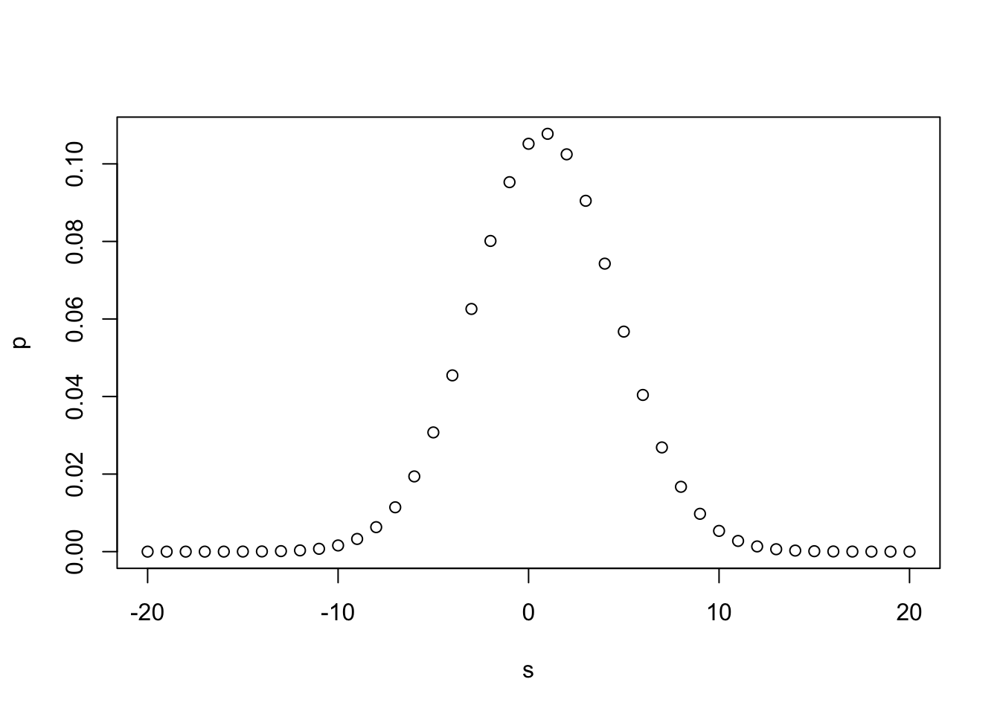
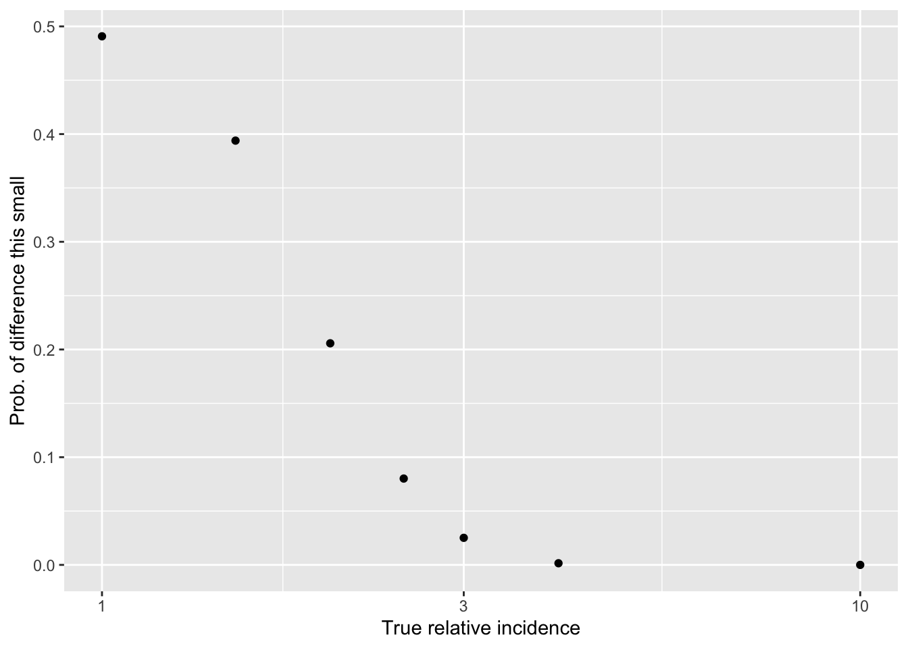

13 Inference and rough equivalence testing with binomial outcomes
This work has been moved from the EA market testing repo, with ‘identifying’ content redacted
Note: ‘raw data’ is a
13.1 Input from Gsheet (WIP)
13.2 How likely is the ‘imbalance of unique emails’ due to chance?
We’ve 1345 unique emails for ‘control’ treatment 1 and 1190 unique emails for treatment 2, if I did the quick calculations correctly. (Todo– integrate the data here.)
We know some emails are repeated. To analyze this correctly I should bring in the actual distribution of ‘number of times an email is in the data’ and simulate assignment. (Or maybe this is a ‘Poisson’ thing?)
As a (perhaps incorrect) first pass I could consider ‘legitimate unique email shows up in the treatment group’ as a random binomial event. (I guess the event is something like ’email is (not) duplicated?) Then we can do the standard binomial (Chi-sq) and Fisher’s exact tests.
n1 <- 1345
n2 <- 1190
(
binom_emails <- prop.test(n1, n1+n2, correct=FALSE)
)##
## 1-sample proportions test without continuity correction
##
## data: n1 out of n1 + n2, null probability 0.5
## X-squared = 9.4773, df = 1, p-value = 0.00208
## alternative hypothesis: true p is not equal to 0.5
## 95 percent confidence interval:
## 0.5111129 0.5499385
## sample estimates:
## p
## 0.530572(
fisher_emails <- fisher.test(matrix(c(n1, n2, n2, n1), ncol=2))
)##
## Fisher's Exact Test for Count Data
##
## data: matrix(c(n1, n2, n2, n1), ncol = 2)
## p-value = 0.00001512
## alternative hypothesis: true odds ratio is not equal to 1
## 95 percent confidence interval:
## 1.142247 1.428639
## sample estimates:
## odds ratio
## 1.277394If the above tests are reasonable, this imbalance is very unlikely to occur by chance.
13.3 How likely are ‘proportions this similar’ under different size ‘true effect sizes’?*
* I think this is relates to a ‘power calculation’, but reporting \(1-power\).
In the next section I started an off-the-cuff simulation approach, in folded code. But I believe that the analytical form here with code and a simulation here should be applicable.
13.3.1 Difference between two binomial random variables.
Reprinting and discussing from Stackexchange post
“derive the distribution of the difference between two binomial random variables.”
I can give you an answer for the pmf of X-Y. From there |X - Y| is straightforward.
So we start with
\(X \sim Bin(n_1, p_1)\)
\(Y \sim Bin(n_2, p_2)\)
We are looking for the probability mass function of \(Z=X-Y\)
Note: in our case we (arguably) care about the difference in ‘proportion of incidences’, but as we also have similar sample sizes (\(n_1 \approx n_2\)) this is basically a normalization
First note that the min and max of the support of Z must be \((-n_2, n_1)\) since that covers the most extreme cases (\(X=0\) and \(Y=n_2\)) and (\(X=n_1\) and \(Y=0\)).
Then we need a modification of the binomial pmf so that it can cope with values outside of its support.
\(m(k, n, p) = \binom {n} {k} p^k (1-p)^{n-k}\) when \(k \leq n\) and 0 otherwise.
Note that this “modified binomial” is what the statistics::dbinom function in R returns.
Then we need to define two cases
- \(Z \geq 0\)
- \(Z \lt 0\)
In the first case
\(p(z) = \sum_{i=0}^{n_1} m(i+z, n_1, p_1) m(i, n_2, p_2)\)
since this covers all the ways in which X-Y could equal z.
Because \((i+z) - i = z\), of course … ‘sum up’ the probability of each of these ‘co-occurances’
For example when z=1 this is reached when X=1 and Y=0 and X=2 and Y=1 and X=3 and Y=4 and so on. It also deals with cases that could not happen because of the values of \(n_1\) and \(n_2\). For example if \(n_2 = 4\) then we cannot get Z=1 as a combination of X=4 and Y=5. In this case thanks to our modified binomial pmf the probablity is zero.
For the second case we just reverse the roles. For example if z=-1 then this is reached when X=0 and Y=1, X=1 and Y=2 etc.
\(p(z) = \sum_{i=0}^{n_2} m(i, n_1, p_1) m(i+z, n_2, p_2)\)
Put them together and that’s your pmf.
\(f(z)=\)
\[\begin{cases} \sum_{i=0}^{n_1} m(i+z, n_1, p_1) m(i, n_2, p_2),& \text{if } z\geq 0\\ \sum_{i=0}^{n_2} m(i, n_1, p_1) m(i+z, n_2, p_2), & \text{otherwise} \end{cases}\]Here’s the function in R and a simulation to check it’s right (and it does work.) https://gist.github.com/ragscripts/9681819
Let me try to apply it…
Defining their code for this function:
modBin <-dbinom #DR: I just do this renaming here for consistency with the rest ... but the modBin they defined was redundant
diffBin<-function(z, n1, p1, n2, p2){
prob <- 0
if (z>=0){
for (i in 1:n1){
prob <- prob + modBin(i+z, n1, p1) * modBin(i, n2, p2)
}
}
else
{
for (i in 1:n2){
prob<-prob+modBin(i+z, n1, p1)*modBin(i, n2, p2)
}
}
return(prob)
}13.3.2 Applying this to present data
Rather than using their example, I’ll dive right in to the present case.
My notes on the outcomes as of 15 Dec 2021
Treatment 1 - Impact and Treatment 2 - Emotion Story tabs
Treatment 1: We record - 8 unique emails donating, 26 donations in total, - worth 5200 USD in total - 1345 unique emails listed as getting ‘control’ treatment 1
Treatment 2: - 6 unique emails, 28 donations so far — worth 7500 USD in total. - 1190 unique emails listed for treatment 2
If I believe my ‘unique emails count’, that implies an 0.59% ‘conversion’ rate for T1 - Control a 0.50% conversion rate for T2 - Emotion/StoryPutting the observations into defined objects (later: do from data)
n1 <- 1345
n2 <- 1190
d1 <- 8
d2 <- 6
z <- d1-d2Computation for a few ‘ad-hoc cases’ (later explore the space with vectors of values)
- Suppose truly equal incidence, at the mean level
p1 <- (d1+d2)/(n1+n2)
p2 <- p1
(
db_0 <- diffBin(z, n1, p1, n2, p2)
)## [1] 0.1024599This implies there is a 10.2% chance of getting this exact difference of +2 incidences between the treatments (in one direction), if the true incidence rates were equal.
Let’s plot this for a range of ‘incidence rate differences’ in this region. (Sorry, using the traditional plot, ggplot is better).
s <- seq(-10*z, 10*z)
p<-sapply(s, function(z) diffBin(z, n1, p1, n2, p2))
plot(s,p)
We see a large likelihood of values in the range of the +2 difference observed, and a low likelihood of a difference of 10 or more in either direction.
13.3.3 Adaptation: ‘of this magnitude or smaller’
ltmag_diffBin <- function(z, n1, p1, n2, p2){
prob <- 0
z_n <- -z #negative value
for (i in z_n:z){ #sum for all integer differences between observed value and its negative, inclusive
prob <- prob + diffBin(i, n1, p1, n2, p2)
}
return(prob)
}Now, a similar computation as above, but for ‘this big or smaller in magnitude’:
(
mag_db_0 <- ltmag_diffBin(z, n1, p1, n2, p2)
)## [1] 0.4908031This implies there is a 49.1% chance of getting a difference no larger than this one in magnitude of +/-2 incidences between the treatments if the true incidence rates were equal.
And finally, what we were looking for: the chance of ‘a difference this small or smaller’ as a function of the true difference…
Set up an arbitrary vector of ‘true differences’ (to keep it simple, only change it in one direction for now …)
Below, I plot
Y-axis: ’how likely would a difference in donations ‘as small or smaller in magnitude’” than we see in the data against
X-axis: if the “true difference in incidence rates” were of these magnitudes
options(scipen=999)
B <- c(1, 1.5, 2, 2.5, 3, 4, 10)
p1 <- rep((d1+d2)/(n1+n2), length(B))
p2 <- p1*B
as.list(ltmag_diffBin(z, n1, p1, n2, p2)*100) %>% format(digits=3, scientific=FALSE)## [1] "49.1" "39.4" "20.6" "8.02"
## [5] "2.51" "0.153" "0.00000000000855"probmag <- ltmag_diffBin(z, n1, p1, n2, p2)
qplot(B, probmag, log = "x", xlab = "True relative incidence", ylab ="Prob. of difference this small")
(
probmag_plot <-
ggplot() +
aes(x=B, y=probmag) +
geom_point() +
scale_x_continuous(trans='log2') +
ylim(0,.51) +
xlab("True relative incidence rate") +
ylab("Prob. diff. as small as obsd")
)
Hard-coded takeaways 15 Dec 2021 :
our data is consistent with ‘no difference’ (of course) … but its also consistent with ‘a fairly large difference in incidence’
E.g., even if one treatment truly lead to ‘twice as many donations as the other’, we still have a 20% chance of seeing a differences as small as the one we see (of 8 versus 6)
We can reasonably ‘rule out’ differences of maybe 2.5x or greater
Main point: given the rareness of donations in this context, our sample size doesn’t let us make very strong conclusions in either directions … at least not yet. I hope that combined with other evidence, we will be able to infer more
13.4 DR discussion of this case … maybe obsolete
We get a 0.59% and a 0.50% conversion rate (share of emails who made at least one contribution in response) for control and treatment, respectively.
How likely would it be to have a ‘difference in incidence this small or smaller’ (either 0.09 pp or 0.09/0.5=0.18 proportional difference)…
if the true differences in incidence were XXX or larger? (For now, assuming the actual incidence rate is 0.50 for the smaller-incidence treatment … later we could have each of these follow a distribution.)
How?
For num_sim number of simulations - ‘Control’: \(i=1..N\) draws from a binomial(0.005) - ‘Treatment’ N draws from a binomial(0.005*B) where B is the ‘considered effect size’ - Compute the effect_i(B) (the difference in share positive size of the simulated difference’ for this simulation) - Compute: ’what share of simulations have a difference smaller in magnitude than the empirical one. I.e., $_i(|ES_i(B)| < |ES|) $
Do this for a range of considered effect sizes, e.g., \(B \in \{0.5, 0.75, 1, 1.5, 2, 3, 4\}\)